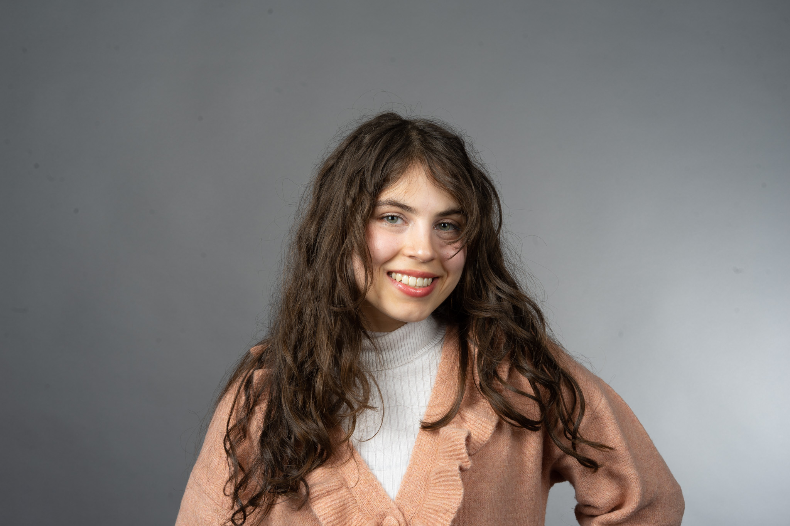

My Resume
Interested in both worlds of tech, marketing and aesthetics;
I currently find myself in a journey of exploring both worlds to grow in them. To use these skills for what I believe in is right with everyone else.
Experience from having been rejected from over 30+ jobs showing mediocre
work and not my fullest potential, but having almost been accepted into multiple competitive jobs, I am now using my anger to improve my skills as i am sick and tired of showing my mediocre shit.
Education
- 2020-2023: Graphic Design Nova College
- 2023-2024: Interactive Design, Coursera San Diego Uni
- 11'2024-now: Fullstack Webdevelopment, Udemy Bootcamp
Work Experience
- 2022-2023: UX & UI, CRM, Animation, OptimaSys in Marbella.
- After Effects, MySendInBlue, Adobe XD, Illustrator, CopyWriting, SEO, Photoshop
- 2023-2024: UX&UI, Webbuilding, Content Creator, Printables
- Adobe XD, Wordpress, Divi, HTML/CSS/JS basics, Photoshop & Illustrator
- 2024-unemployed, studying from home. HIRE ME PLEASE.!!!
Skills
- HTML/CSS/JS
- User Experience Design & User Interface
- 2d & 3d animation
- Illustrating
- Graphics
- Language/seo/content creation/writing
- Branding

Contact me
My Hobbies